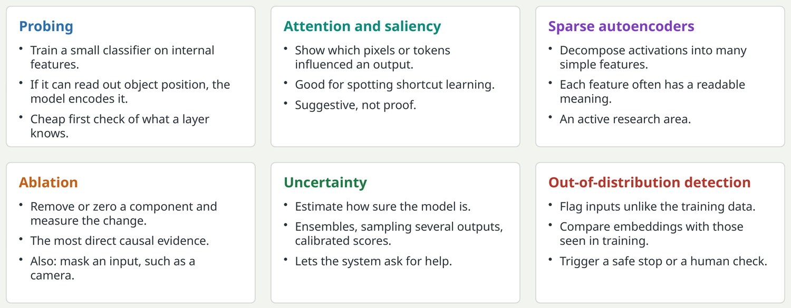
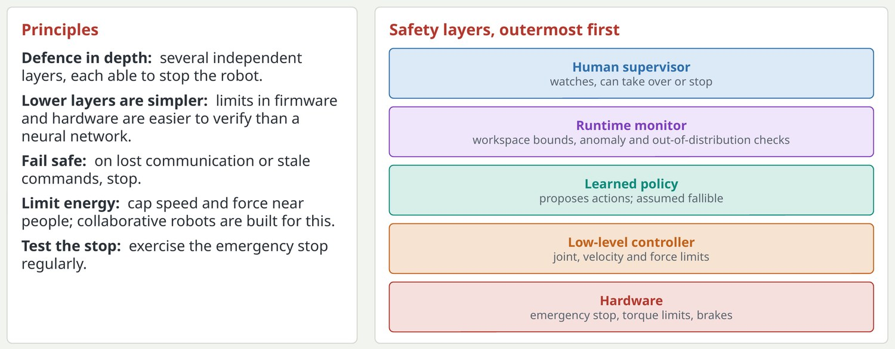

Looking inside the model, and knowing when not to trust it
Tools for asking what a model has learned and whether the current input is one it can handle.

Of the explainability methods in the old deck, saliency and ablation survive in daily use; LIME, layer-wise relevance propagation and RETAIN are now rarely used for large models. Sparse autoencoders are the main new tool. For robots, uncertainty and out-of-distribution detection are practical safety tools: a policy facing an unfamiliar scene should slow down or stop.
Key pointInterpretability tools suggest hypotheses; an ablation or a controlled test confirms them.
Physical safety: layers outside the learned model
A learned policy will sometimes be wrong, so safety has to be enforced outside it.

This is a slide to linger on with junior engineers who will work near hardware. Collaborative robots limit force and speed by design, but any arm or humanoid can injure.
Key pointNever rely on the policy to be safe; put hard limits underneath it and a human above it.